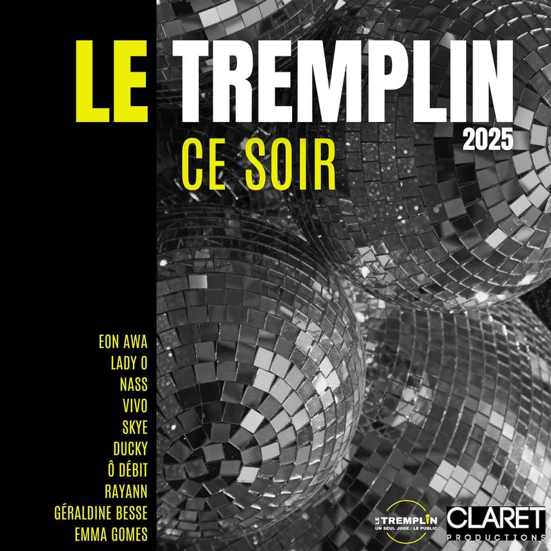
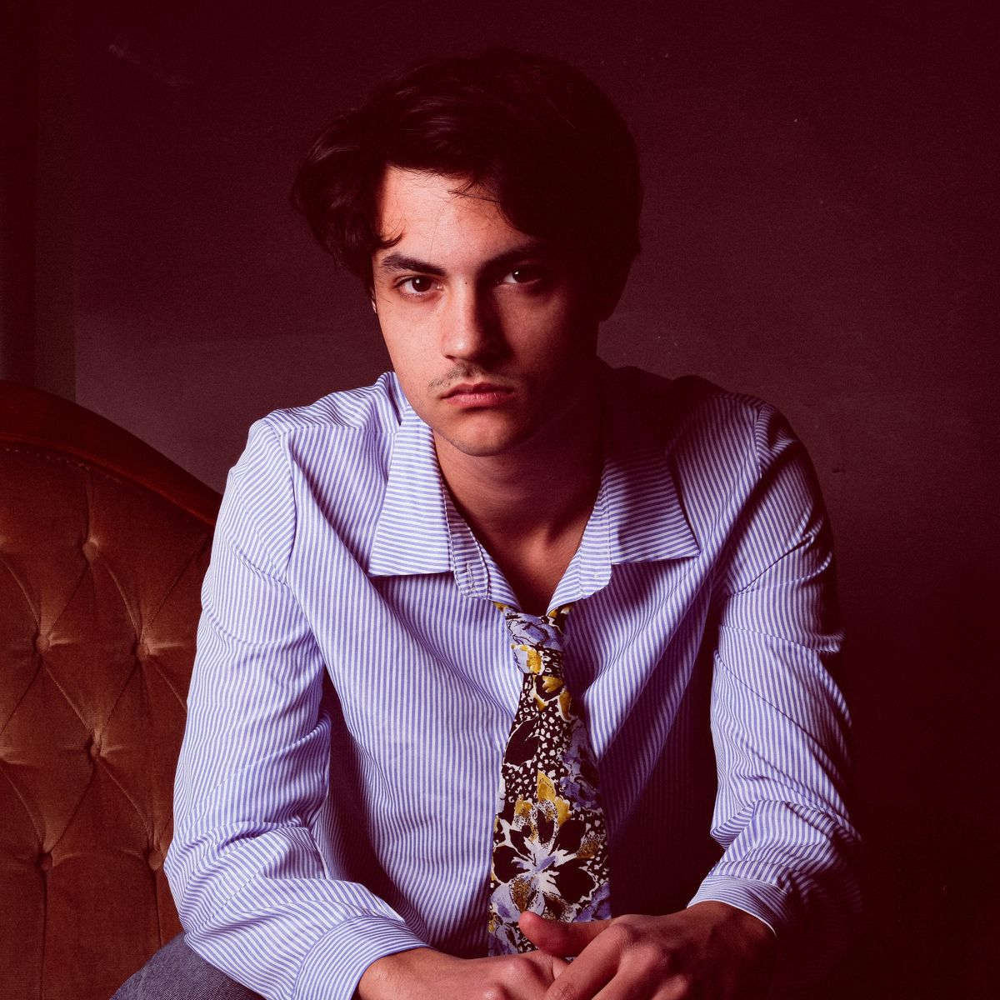
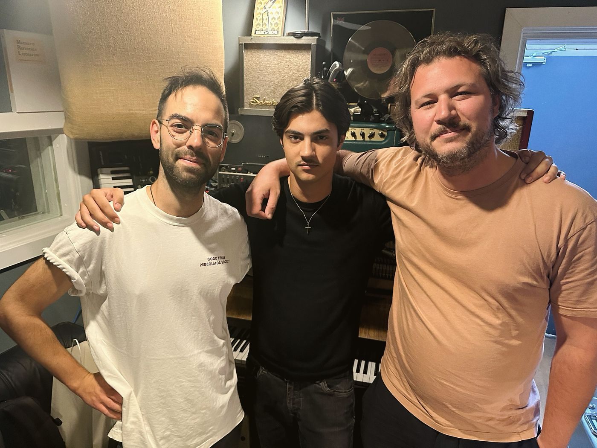
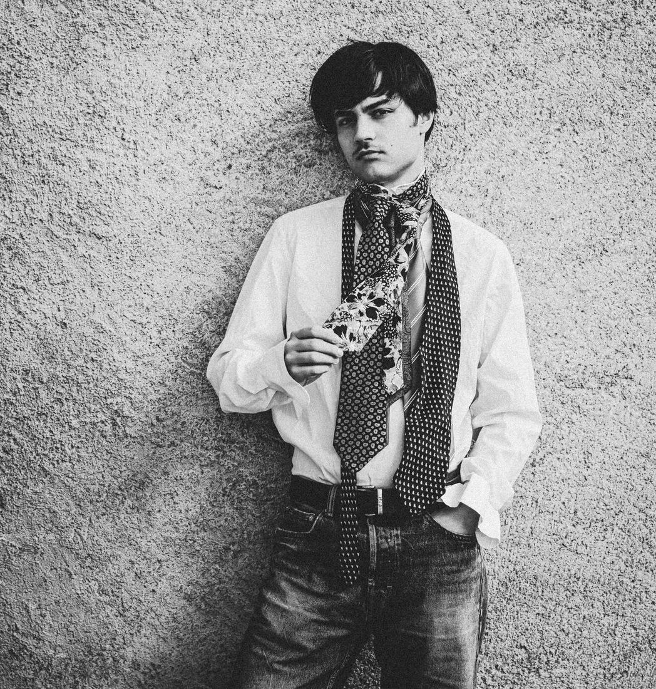
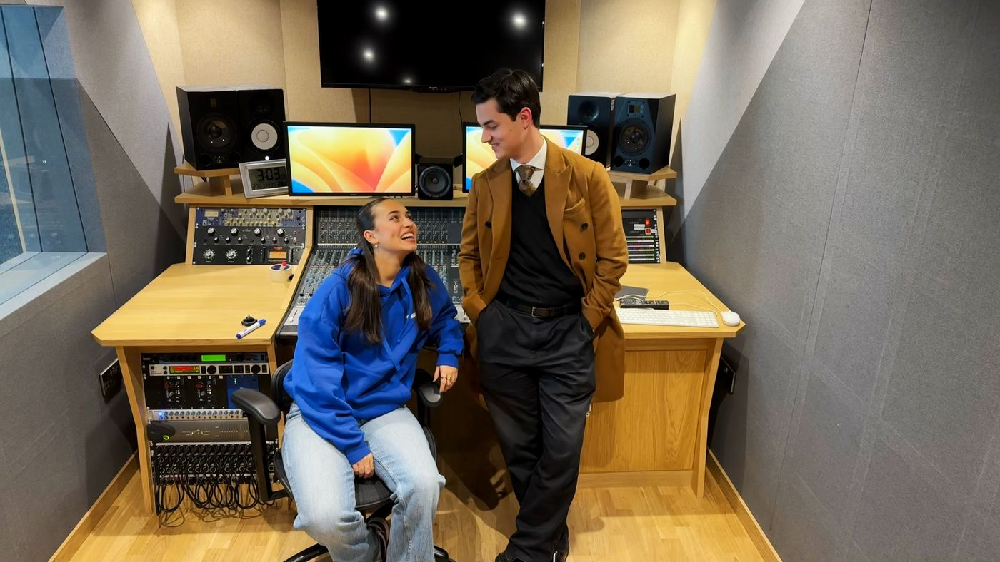
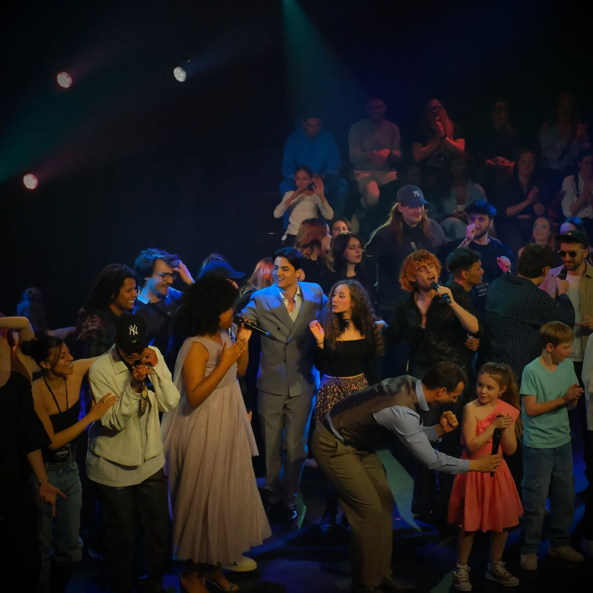
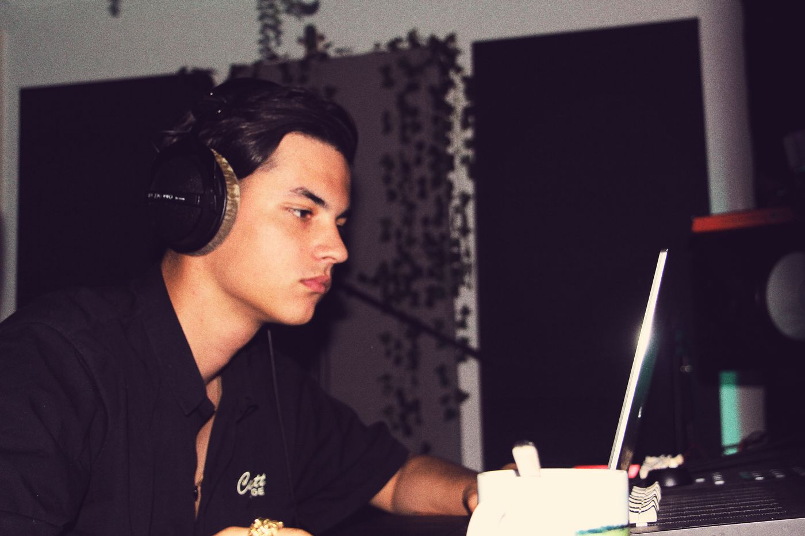
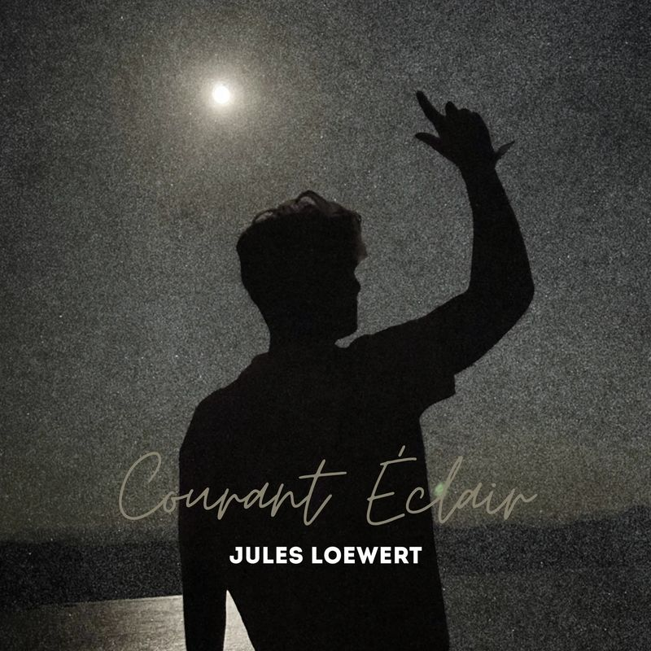
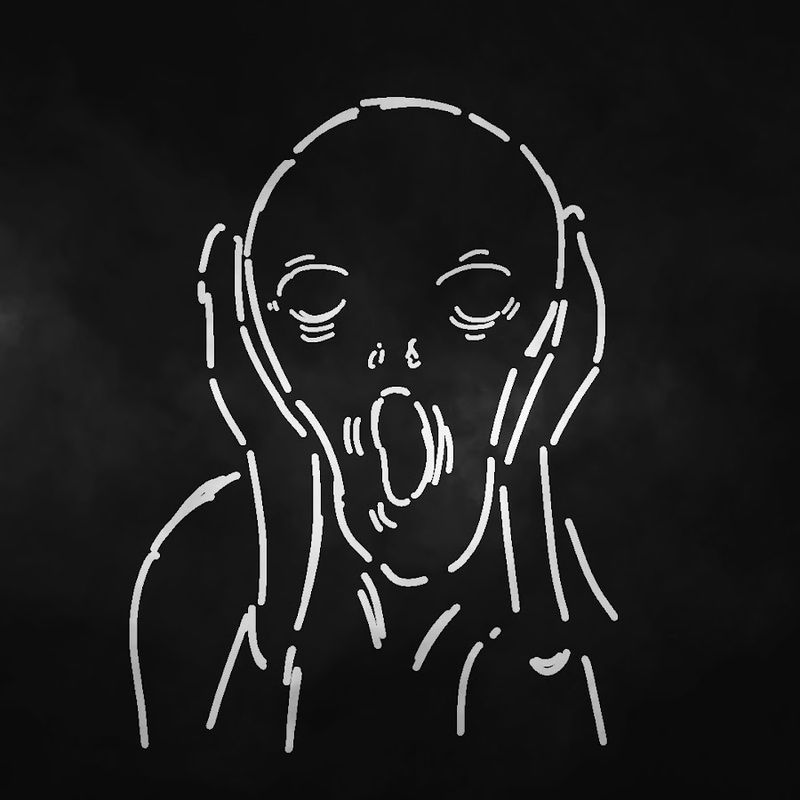

Ce Soir
Claret & Le Tremplin – Un Seul Juge : Le Public
Chanté par les finalistes, dont Lady O, gagnante de The Voice France 2026
Producteur, compositeur, arrangeur et co-auteur
Producteur / Auteur-compositeur / Directeur artistique
J’aide les artistes à transformer une idée de chanson en disque abouti et je compose de la musique originale pour le cinéma, la télévision et la publicité, entre la Suisse et Londres.

J’aide les artistes à transformer une idée de chanson en disque abouti et je compose de la musique originale pour le cinéma, la télévision et la publicité, entre la Suisse et Londres.
En août 2025, j’ai emmené mes chansons au Palace Garden Studio de Joe Lyons, à Londres.
Je les avais écrites quelques jours plus tôt. Puis un batteur, un bassiste, un guitariste et un claviériste se sont mis à les jouer, et j’y ai entendu des choses que je n’avais pas encore entendues.
Je suis né à Sion, j’ai grandi à Lutry et j’ai commencé la musique à dix ans. J’ai été bercé par les Beatles, James Brown et David Bowie.
J’ai commencé chez Swiss Artists Productions, en arrangeant et en écrivant pour d’autres artistes. En 2025, j’ai co-écrit, composé et produit « Ce Soir », l’hymne officiel du Tremplin.
Aujourd’hui, je suis producteur et directeur artistique chez Sowatt Music. J’aime chercher qui doit chanter la première ligne, ce qui se passe quand on retire la guitare, et quelle photo donne envie d’écouter le disque.





Je produis des singles, des EP et des albums pour des artistes solo, des groupes et des labels. Je peux intervenir dès la maquette ou accompagner un projet de la préproduction à l’enregistrement, jusqu’à la livraison.
J’écris des chansons, des mélodies et des textes avec les artistes.
Je compose des musiques pour le cinéma, la télévision, la publicité et la vidéo en ligne. Je travaille avec des cinéastes, des sociétés de production, des agences et des créateurs indépendants, de la nappe ambiante aux pièces expérimentales construites autour d’une scène.
Je façonne la structure, l’harmonie, l’instrumentation et les parties vocales, pour le disque comme pour la scène.
J’aide les artistes à définir le son d’un projet, à choisir les chansons et à relier la musique à la pochette, aux photos et à la vidéo.
Je dirige les sessions, j’accompagne les interprétations et je travaille les arrangements vocaux, les harmonies et les prises.
Je réunis musiciens, studios et ingénieurs du son pour des projets en Suisse et à Londres.
J’enregistre des concerts et produis des albums live, de la captation le soir même jusqu’à la sortie.
Je suis associé de Sowatt Music, studio et société de production à Crissier. J’y porte le volet artistique : production, composition, arrangement et direction artistique. Mon associé Michel Gallone porte le volet technique : enregistrement, mixage et mastering. Ensemble, nous menons un projet de bout en bout, sous un même toit. Au-delà du disque, Sowatt enregistre des concerts live et prend en charge des travaux audiovisuels, dont la transcription vidéo et le sous-titrage multilingue pour des institutions culturelles, des projets éducatifs et des sociétés de production.

Claret & Le Tremplin – Un Seul Juge : Le Public
Chanté par les finalistes, dont Lady O, gagnante de The Voice France 2026
Producteur, compositeur, arrangeur et co-auteur
Sarabds
Producteur, compositeur, arrangeur, claviers et programmation
TDenon
Producteur, compositeur, arrangeur, claviers et programmation

Jules Loewert
Co-compositeur

Gravv · chaîne indépendante, ~25 000 abonnés
Compositeur principal · des paysages sonores ambiants aux pièces expérimentales
Claret
Auteur, compositeur, arrangeur, producteur, ingénieur du son et chant · enregistré à Londres
La liste complète de mes crédits, avec mon rôle sur chaque titre, est sur Muso.ai.
Voir tous les crédits sur Muso.ai ↗︎TDenon voulait un morceau épique. Le résultat, c’est « Siegfried », une pièce en trois parties, chacune avec sa propre identité musicale. Il dit qu’il n’arrive toujours pas à la ranger dans un seul genre.
Pour le dernier titre de l’album, on parlait d’ajouter quelques touches à la fin. Comme le raconte TDenon, j’ai mis mon casque, je l’ai retiré un quart d’heure plus tard et j’ai dit :
« Je vais faire un orchestre. »
Ces quelques touches sont devenues une fin symphonique.
Il a pris en charge toute la production, a apporté sa touche, est resté fidèle à ma vision et a répondu à mes nombreuses demandes.
Depuis que nous travaillons ensemble, Enzo a su poser une direction artistique claire, cohérente avec mon univers.
J’ai eu la chance de travailler avec Enzo Claret pour mon premier métrage et sa capacité à comprendre et réaliser mes idées ainsi qu’apporter sa propre identité en fait à ce jour ma meilleure collaboration avec un artiste musical.
Les idées d’Enzo sont inspirantes, et ses indications pendant la session d’enregistrement étaient réfléchies et pertinentes.
Il savait toujours exactement ce qu’il voulait, tout en me laissant la place d’apporter mes propres idées. Les parties de guitare étaient un plaisir à enregistrer, surtout les moments les plus fous.
Un article sur la finale du Tremplin 2025, avec Lady O, finaliste cette année-là et aujourd’hui gagnante de The Voice France 2026, et sur la chanson des finalistes que j’ai composée pour le concours.
Lire l’article ↗︎Si vous avez en tête une chanson, un disque ou un film, dites-moi ce que vous préparez, où vous en êtes et sur quoi vous aimeriez travailler ensemble.